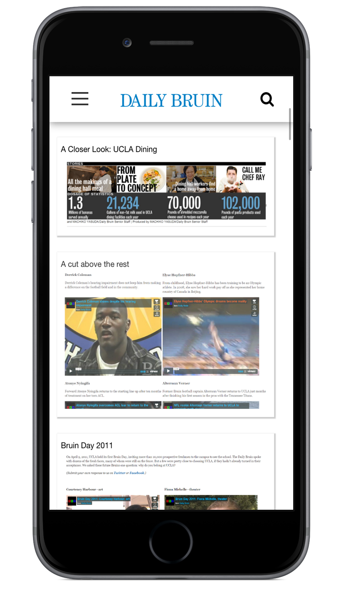
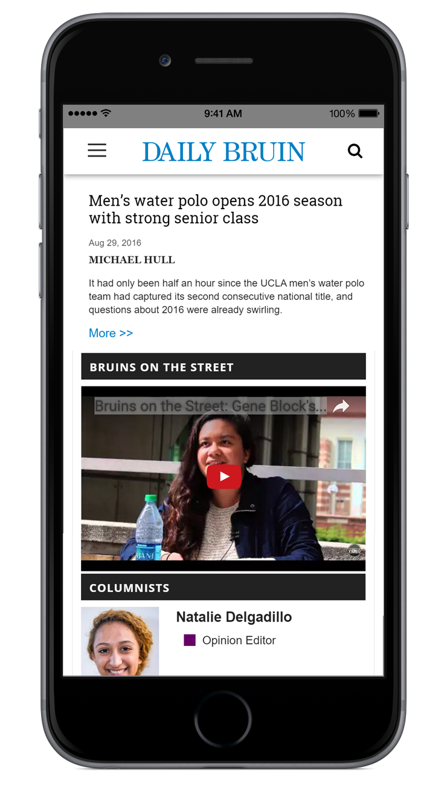
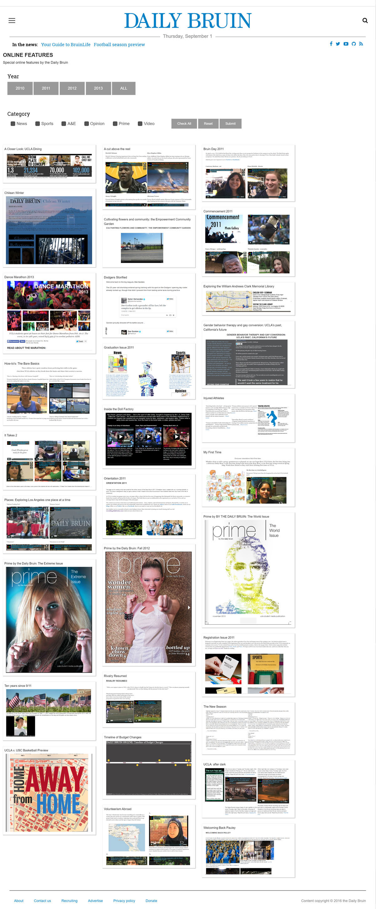
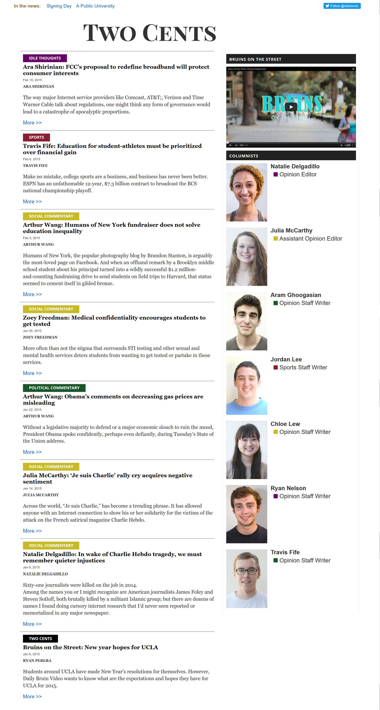

Daily Bruin Projects




The Daily Bruin is the student newspaper of UCLA. During my time as a member of the Daily Bruin Online department I developed several web pages including:
1. Tiled list of Daily Bruin Online Features built with the Masonry Cascading Grid Layout. List items are pulled from a JSON list using JavaScript/JQuery. List can be dynamically filtered by category or year.
2. Blog styled opinion column page incorporated into existing WordPress framework with color coded headers to distinguish coloumn subject matter.
SKILLS USED: HTML, CSS, JavaScript, JQuery, PHP, JSON, WordPress, Bootstrap